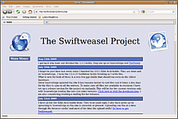

Swiftweasel
Archivierte Anleitung
Dieser Artikel wurde archiviert, da er - oder Teile daraus - nur noch unter einer älteren Ubuntu-Version nutzbar ist. Diese Anleitung wird vom Wiki-Team weder auf Richtigkeit überprüft noch anderweitig gepflegt. Zusätzlich wurde der Artikel für weitere Änderungen gesperrt.
Zum Verständnis dieses Artikels sind folgende Seiten hilfreich:
Swiftweasel  ist eine freie Version des Firefox-Browsers mit Optimierungen speziell für AMD und Intel Prozessoren. Ähnlich der Modifikation Swiftfox gibt es für unterschiedliche CPUs unterschiedliche Versionen. Außerdem finden sich noch einige weitere kleinere Änderungen zur Steigerung der Performance. Das flinke Wiesel stellt eine freie Alternative zum proprietären Swiftfox dar. Der Autor von Swiftfox verletzt die Mozilla Public License und stellt seine optimierte Version von Firefox nur als Closed Source zur Verfügung. Er begründet dies damit, dass es Swiftfox sicherer machen würde, was allerdings im Widerspruch zur Philosophie von Open Source steht.
ist eine freie Version des Firefox-Browsers mit Optimierungen speziell für AMD und Intel Prozessoren. Ähnlich der Modifikation Swiftfox gibt es für unterschiedliche CPUs unterschiedliche Versionen. Außerdem finden sich noch einige weitere kleinere Änderungen zur Steigerung der Performance. Das flinke Wiesel stellt eine freie Alternative zum proprietären Swiftfox dar. Der Autor von Swiftfox verletzt die Mozilla Public License und stellt seine optimierte Version von Firefox nur als Closed Source zur Verfügung. Er begründet dies damit, dass es Swiftfox sicherer machen würde, was allerdings im Widerspruch zur Philosophie von Open Source steht.
Die letzte Version 3.5.6 von Swiftweasel stammt von Anfang 2010. Leider scheint die Weiterentwicklung eingeschlafen zu sein.

Unterschiede zu Firefox¶
Besonders auf 64bit Systemen kann die Benutzeroberfläche von Firefox sehr träge reagieren und der Arbeitsfluss stockt. Beispiele hierfür sind u.a. langsame Menüs, Scrollen der Tableiste, Tab-Wechsel, Eingabeformulare usw. Swiftweasel will es besser machen und wird zusätzlich standardmäßig u.a. mit der Erweiterung AdBlock ausgeliefert.
Eine detaillierte Liste der Optimierungen kann auf der Wiki-Seite des Projekts nachgelesen werden.

Installation¶
Wenn man nicht genau weiß, welchen Prozessor-Typ man verwendet, öffnet man ein Terminal [1] und gibt den Befehl
cat /proc/cpuinfo
ein. Wichtig ist "AMD" oder "Intel" (für AMD-K10-Prozessoren wird ein separater Swiftweasel angeboten).
Hinweis!
Fremdsoftware kann das System gefährden.
Auf der Seite von Tuxfamily  lädt man die jeweils aktuellste Version herunter. Beispiel: man achte auf den CPU-Hersteller (z.B. "AMD") und die verwendete Ubuntu-Version (z.B. 64-ubuntu ). Dann wählt man swiftweasel-x.y.z_amd-pgo_x86_64-ubuntu.tar.gz. Nun öffnet man das Terminal und entpackt [2] die Archivdatei (Dateinamen anpassen).
lädt man die jeweils aktuellste Version herunter. Beispiel: man achte auf den CPU-Hersteller (z.B. "AMD") und die verwendete Ubuntu-Version (z.B. 64-ubuntu ). Dann wählt man swiftweasel-x.y.z_amd-pgo_x86_64-ubuntu.tar.gz. Nun öffnet man das Terminal und entpackt [2] die Archivdatei (Dateinamen anpassen).
tar -xzvf SwiftweaselDateiName.tar.gz
Zur systemweiten Nutzung kopiert man den Inhalt des entpackten Archivs nach /opt. Hierfür werden Root-Rechte [3] benötigt:
sudo mv -f ~/swiftweasel /opt/
Jetzt kann noch eine symbolische Verknüpfung mit
sudo ln -s /opt/swiftweasel/swiftweasel /usr/local/bin/swiftweasel
gesetzt werden, um das Programm direkt aus dem Terminal starten zu können. Ab sofort kann man Swiftweasel mit folgendem Befehl starten [4]:
swiftweasel
Zusätzlich kann man sich einen Programmstarter erstellen.
Hinweis:
Swiftweasel legt ein eigenes Benutzerprofil unter ~/.sw35 an, das Benutzerprofil von Firefox bleibt unangetastet.
Erweiterungen¶
Standardmäßig werden schon einige Erweiterungen mit Swiftweasel ausgeliefert, unter anderem sind dies:
Hinweis:
Die Erweiterungen müssen eventuell beim ersten Start von Swiftweasel aktualisiert werden ("Tools -> Add-ons -> Extensions -> Find Updates"), da diese sonst nicht aktiv sind.
Swiftweasel auf Deutsch¶
Das deutsche Sprachpaket lädt man von Mozilla
herunter. Hier man exakt auf die jeweilige Version achten. Dann unter "linux-i686 -> xpi" und dort die Sprachdatei de.xpi herunterladen.In Swiftweasel das Addon-Fenster öffnen ("Tools -> Add-ons") und mittels Install die gerade heruntergeladene Datei de.xpi angeben. Nun ist ein Neustart des Swiftweasel erforderlich.
Unter "Tools -> Quick Locale Switcher" auf Deutsch umstellen. Nach einem weiteren Neustart ist Swiftweasel eingedeutscht.
Hinweis:
Durch die Installation der deutschen Sprachdatei heißt Swiftweasel intern wieder Mozilla Firefox.

Tipps¶
Firefox Einstellungen übernehmen¶
Wer einige gewohnte Profileinstellungen aus dem Firefox übernehmen will, kann die entsprechenden Dateien auch kopieren. Aus dem Benutzerprofil unter ~/.mozilla/firefox/*.default nach ~/.sw35/swiftweasel/*.default . Aber Achtung, manche Dateien sind dem Swiftweasel zu viel und er lässt sich nach dem Kopieren nicht mehr öffnen. Eine Sicherung vor dem Überschreiben ist deshalb sinnvoll! Die Ordner bookmarkbackups/ und extensions/ aus dem Firefoxprofil funktionieren problemlos.
Standardbrowser¶
Im GNOME-Menü unter "System -> Einstellungen -> Bevorzugte Anwendungen -> Webbrowser" auf "Benutzerdefiniert" setzen und unter "Befehl" den Eintrag den Befehl auf swiftweasel %s ändern.
- Erstellt mit Inyoka
-
 2004 – 2017 ubuntuusers.de • Einige Rechte vorbehalten
2004 – 2017 ubuntuusers.de • Einige Rechte vorbehalten
Lizenz • Kontakt • Datenschutz • Impressum • Serverstatus -
Serverhousing gespendet von